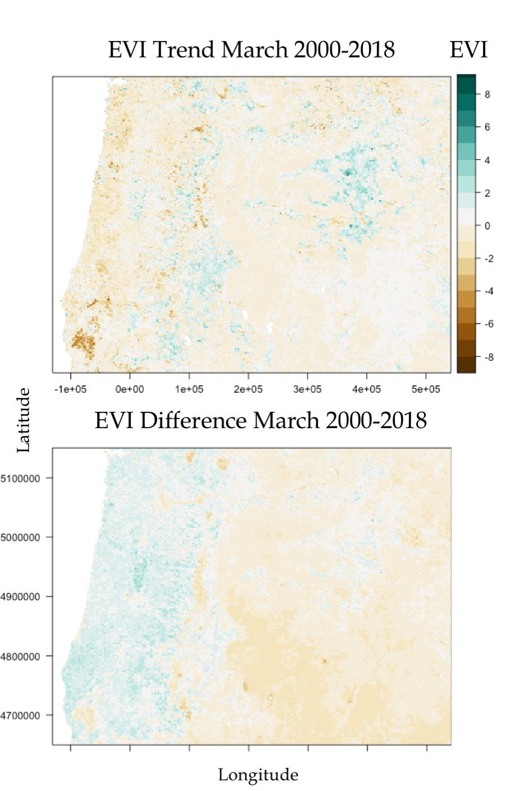

Current Projects
The climate paradox: mapping resilience and vulnerability of montane forests
 Trees can adjust to natural climate fluctuations by efficiently regulating leaf carbon and water exchange; however, the rapid pace of human induced climatic change threatens the ability of forests to sequester carbon and resist draught. While these limits are often characterized at the scale of an individual tree, or a plot, this research seeks to characterize regional scale drivers of forest productivity across the state of Oregon over recent decades. Recent research has found the most stressed forest ecosystems are mixed conifer forests where drought induced mortality has led to massive dieoffs. However, at high elevations in these same forests, tree lines are expanding, with longer growing seasons aiding forest expansion. This project seeks to develop of a risk index for dieoff of different regions based on characterizations of the impact of shifting climate. By measuring plant, site, and regional scale factors controlling productivity over time we will combine spatial and temporal data, generating a series of maps to inform land management, educate the general public, and direct future scientific efforts. To understand the range of impact of climate change, we identified regions in Oregon which are experiencing a variety of changes in climate. In the Northeast, the Wallowa mountains show increased moisture, while many Western locations are increasingly dry. By identifying factors which link spatial scales, this work will develop a tool to aid future efforts to model the impact of climate change and disturbance on forest evolution, and natural resources.
Probing for the role of fungal networks in nutrient transfer of novel plant communities across the PNW
Injecting Enriched CO2 into Growth Chambers, May, 2018

The project will assess plant and soil community sensitivity to experimentally imposed drought across a 520 km latitudinal gradient in the PNW. A broad climatic gradient will be used to study typical prairie and pasture systems where increasingly severe seasonal differences, characterized by wetter winters and drier summers, have caused declines in productivity. General hypotheses pertaining to the role of fungal networks in maintaining diverse prairie and low-diversity pasture productivity will be tested to address a major challenge for sustainability in the region and in similar systems elsewhere. Specifically, the proposed tasks will identify plant and fungal species that best maintain primary productivity, plant water-use efficiency, and foster C and N exchange in communities under stress. This knowledge will be used to quantify thresholds of species composition and soil resource availability beyond which intervention is needed to prevent loss of biodiversity and resilience to drought. Alterations of mycorrhizal mediated transfer or retention of C and N will be monitored using pulse stable isotope labeling experiments to determine whether and how inter-specific connectivity increases community resilience and productivity under imposed stress. A replicated nested design across a latitudinal gradient will be used to characterize mycorrhizal network behaviors that can be simplified to improve inter-specific connectivity and resource transfer in native and managed systems. Passive and active resource transport among different plant species and fungi will be distinguished through stable isotope probing of DNA sequences and used to develop a spatially-explicit mechanistic model for the scaling of local mutualistic and competitive interactions affecting composition and function of common mycorrhizal networks.
Connecting carbon and oxygen isotope ratios from plant cellulose to soil carbonates to improve understanding of environmental stress
Eastern Sierra Aspen, October 2015
In this project I am helping advise UO Geology student Adrian Broz in identifying a mechanism and mathematical transfer functions to relate carbon and oxygen isotope ratios of soil carbonates as a reflection of plant physiological processes that are identifiable in leaf and woody cellulosic isotope ratios. As soil microorganisms respire CO2, the soil atmosphere is in equilibrium with soil water, preserving that organically derived signal. Connecting these two pools will allow for soil carbonates in paleosols to be used to identify atmospheric conditions throughout geologic time, informing our understanding of plant responses to past environmental conditions in order to better predict future change.